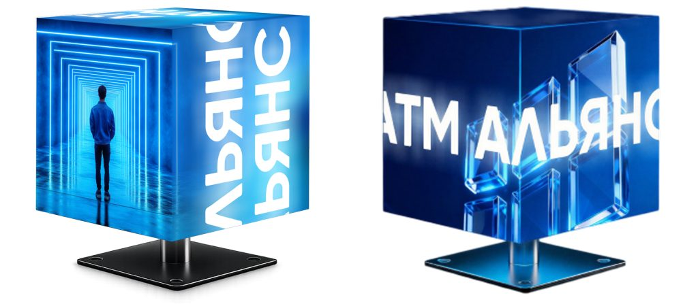
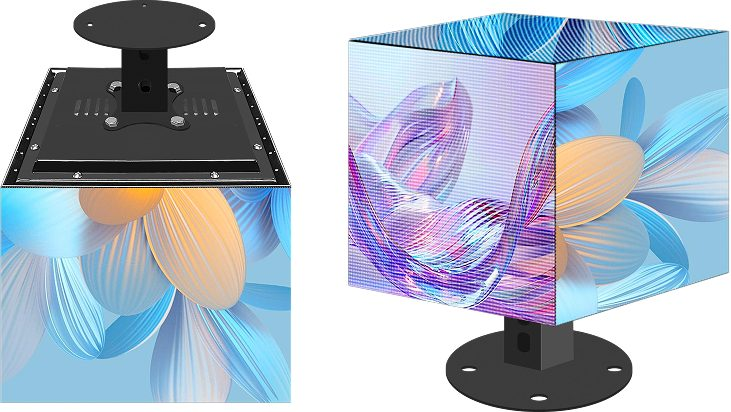
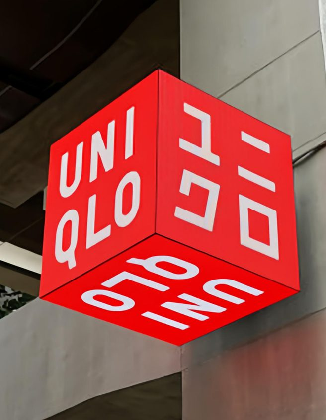
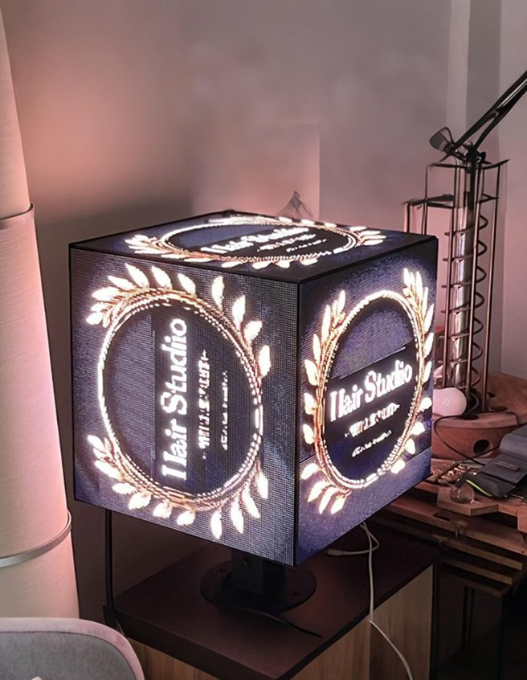
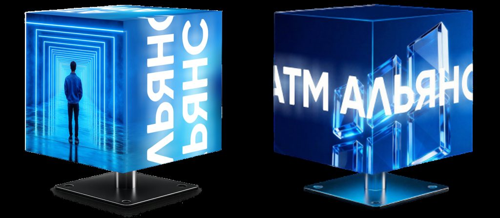

Медиакубы и светодиодные рекламные кубы
Медиакуб - это объёмная светодиодная конструкция с экранами на нескольких гранях. В отличие от плоского экрана, имеющего одну плоскость отображения контента , такой рекламный куб заметен со всех сторон и эффективнее привлекает внимание посетителей.
АТМ АЛЬЯНС изготавливает и поставляет светодиодные кубы для отделений банков, зон самообслуживания, торговых и бизнес-центров, аэропортов и других сфер применения. Комплектующие поступают напрямую от завода-изготовителя, сборка конструкции выполняется на производственной площадке АТМ АЛЬЯНС, поэтому размер, цвет и другие характеристики будут подобраны с учетом задачи заказчика.

Медиакуб в цифрах
Новый блок: фактыЧто такое медиакуб
Блок: текст + фотоКонструкция собирается из LED-панелей, закрепленных на жестком каркасе. В базовом исполнении экраны занимают пять граней куба, нижняя сторона предназначена для установки монтажного кронштейна. Панели синхронизированы между собой и отображают либо единое изображение, охватывающее несколько граней куба, либо разный контент на каждой стороне.
Управление реализуется с помощью выделенного контроллера: видеопоток передаётся по сети, после чего контроллер распределяет сигнал на соответствующие грани конструкции.
Питание осуществляется от сети 220 В, сигнал подается по кабелю LAN.

Преимущества и применение светодиодного куба
Блок: карточки-преимуществаСветовой рекламный куб одинаково хорошо работает и как рекламный носитель, и как навигационный указатель на объектах с высокой проходимостью.


Экраны на пяти гранях обеспечивают хорошую видимость с разных сторон.
Яркость до 5 000 кд автоматически подстраивается под окружающее освещение.
Широкий угол обзора до 160 градусов.
Круглосуточная работа в режиме 24/7.
Реклама, информационные сообщения и навигация в одном носителе.
Удаленное управление контентом и мониторинг состояния устройства.
Централизованное управление группой кубов на разных объектах из одного интерфейса.
Эффективное использование пространства над оборудованием, которое обычно остается незадействованным.
Технические характеристики медиакуба
Блок: таблица характеристик| Рекомендуемый шаг пикселя | P1.86 |
| Яркость | до 5 000 кд, автоматическая адаптация к освещению |
| Угол обзора | до 160 градусов |
| Стандартный размер | 320 × 320 мм |
| Дополнительный размер | 480 × 480 мм |
| Количество экранов | 5 граней, нижняя сторона под кронштейн |
| Кронштейн | металл, высота 80 мм, черный, окраска по шкале RAL под заказ |
| Питание и сигнал | 220 В, кабель LAN |
| Режим работы | 24/7 |
| Форматы контента | видео, анимация, статичные изображения, бегущая строка, комбинированные сценарии |
| Гарантия | 12 месяцев |
Размеры и цена «от»
Новый блок: размеры с ценойРассчитать медиакуб
Новый блок: расчётУкажите размер, количество кубов, место установки и город. Пришлём КП с ценой, сроком изготовления и монтажом.
- Сборка на собственной площадке, комплектующие от завода
- Контент под задачу: единое изображение на 5 граней или разное
- КП в течение рабочего дня
Цена и изготовление под нужные размеры
Блок: расчётЦена и изготовление под нужные размеры
Купить светодиодный рекламный куб можно как в одном экземпляре, так и партией для оснащения нескольких объектов. Стоимость оснащения зависит от размера граней, шага пикселя, способа монтажа и объема поставки поэтому расчет выполняется под конкретный проект.
Рекламный куб выпускается в типовых габаритах 320 × 320 мм и 480 × 480 мм. Если эти размеры не подходят, возможно изготовление в нестандартных габаритах - конструкция собирается под заданные параметры.
Комплектация и срок поставки согласовываются индивидуально и фиксируются в коммерческом предложении.
Где стоят наши медиакубы
Новый блок: кейсы
Торговая сеть в ТЦ
Кубы 320 мм над кассовой зоной, единый контент на 5 граней. число кубов

Отделение банка
объект, размер, контент
Зона самообслуживания
объект
Объекты и цифры результата заполняет клиент; страница «Проекты» сейчас отдаёт 404.
Монтаж и гарантийный срок
Блок: гарантияКуб устанавливается на горизонтальную поверхность, например на верхнюю крышку банкомата, стойку или пьедестал, и фиксируется крепежными элементами. Возможен подвесной монтаж, если конструкцию требуется разместить в атриуме или над входной зоной. Установка на банкомат или платежный терминал производится оперативно - куб фиксируется на верхней крышке устройства и кабели прокладываются внутри кронштейна через технологическое отверстие диаметром от 1 до 2 см.
Гарантийный срок на оборудование составляет 12 месяцев. Сборка выполняется на производственной площадке АТМ АЛЬЯНС. После установки оборудования специалисты компании помогут настроить сценарии и расписание показа в зависимости от времени суток и дней недели, а также покажут как производить удаленную регулировку яркости.
Отзывы заказчиков
Новый блок: отзывы и рейтингиОтзыв: медиакубы в торговом зале, срок изготовления, монтаж.
Отзыв: отделение банка, согласование контента.
Отзыв: зона самообслуживания, кронштейн под цвет.
Для запуска собрать отзывы с Яндекс Карт и 2ГИС, тексты в прототипе условные.
Как заказать медиакуб
Для заказа предварительного расчета достаточно оставить заявку с описанием объекта и задачи: требуемое количество кубов, место установки и планируемый контент. Специалисты АТМ АЛЬЯНС подберут размер конструкции и шаг пикселя, рассчитают стоимость с учетом монтажа и назовут примерные сроки изготовления.